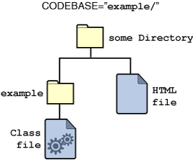
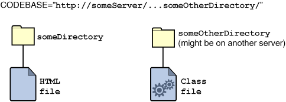

This section tells you most of what you need to know to use the<APPLET>tag. It starts by showing you the tag's simplest form. It then discusses some of the most common additions to that simple form: the<PARAM>tag, alternate HTML code and text, theCODEBASEattribute, and theARCHIVEattribute. For a detailed description of the<APPLET>tag, refer to Using the applet Tag.You should already have seen the simplest form of the
<APPLET>tag:This tag tells the browser to load the applet whose<APPLET CODE=AppletSubclass.class WIDTH=anInt HEIGHT=anInt> </APPLET>Appletsubclass is named AppletSubclass, displaying it in an area of the specified width and height.
Some applets let the user customize the applet's configuration with parameters, as described in Defining and Using Applet Parameters. For example,AppletButton(an applet used throughout this tutorial to provide a button that brings up a window) allows the user to set the button's text by specifying the value of a parameter namedBUTTONTEXT.The developer provides the value of a parameter using a
<PARAM>tag. The<PARAM>tags should appear just after the<APPLET>tag for the applet they affect:<APPLET CODE=AppletSubclass.class WIDTH=anInt HEIGHT=anInt> <PARAM NAME=parameter1Name VALUE=aValue> <PARAM NAME=parameter2Name VALUE=anotherValue> </APPLET>Here's an example of the
<PARAM>tag in use.<APPLET CODE="Animator.class" WIDTH=460 HEIGHT=160> <PARAM NAME="imageSource" VALUE="images/Beans"> <PARAM NAME="backgroundColor" VALUE="0xc0c0c0"> <PARAM NAME="endImage" VALUE=10> <PARAM NAME="soundSource" VALUE="audio"> <PARAM NAME="soundtrack" VALUE="spacemusic.au"> <PARAM NAME="sounds" VALUE="1.au|2.au|3.au|4.au|5.au|6.au|7.au|8au|9.au|0.au"> <PARAM NAME="pause" VALUE=200> . . . </APPLET>
Note the ellipsis points (". . .") in the previous HTML example. What did the example leave out? It omitted alternate HTML code — HTML code interpreted only by browsers that don't understand the<APPLET>tag. Alternate HTML code is any text that appears between the<APPLET>and</APPLET>tags, after any<PARAM>tags. Browsers enabled with Java technology ignore alternate HTML code.To specify alternate text to browsers enabled with Java technology and other browsers that understand the
<APPLET>tag, use theALTattribute. If the browser can't display an applet for some reason, it can display the applet'sALTtext.We use alternate HTML code throughout the online version of this tutorial to tell readers about the applets they're missing. Often, the alternate HTML code includes one or more pictures of the applet. Here's the complete HTML code for the
Animatorexample shown previously:A browser that does not understand the<APPLET CODE="Animator.class" WIDTH=460 HEIGHT=160 ALT="If you could run this applet, you'd see some animation"> <PARAM NAME="imageSource" VALUE="images/Beans"> <PARAM NAME="backgroundColor" VALUE="0xc0c0c0"> <PARAM NAME="endImage" VALUE=10> <PARAM NAME="soundSource" VALUE="audio"> <PARAM NAME="soundtrack" VALUE="spacemusic.au"> <PARAM NAME="sounds" VALUE="1.au|2.au|3.au|4.au|5.au|6.au|7.au|8au|9.au|0.au"> <PARAM NAME="pause" VALUE=200> Your browser is completely ignoring the <APPLET> tag! </APPLET><APPLET>tag ignores everything in the previous HTML code except the line that starts with "Your". A browser that does understand the<APPLET>tag ignores everything on that line. If the applet-savvy browser can't run the applet, it might display theALTtext.
By default, a browser looks for an applet's class and archive files in the same directory as the HTML file that has the<APPLET>tag. (If the applet's class is in a package, then the browser uses the package name to construct a directory path underneath the HTML file's directory.) Sometimes, however, it's useful to put the applet's files somewhere else. You can use theCODEBASEattribute to tell the browser in which directory the applet's files are located:If aURL is a relative URL, then it's interpreted relative to the HTML document's location. By making aURL an absolute URL, you can load an applet from just about anywhere — even from another HTTP server.<APPLET CODE=AppletSubclass.class CODEBASE=aURL WIDTH=anInt HEIGHT=anInt> </APPLET>This tutorial uses
CODEBASE="someDirectory/"frequently, since we group the examples for each lesson in subdirectories. For example, here's the<APPLET>tag that includes the Simple applet in The Life Cycle of an Applet:
The following figure shows the location of the class file, relative to the HTML file, when<APPLET CODE=Simple.class CODEBASE="example/" WIDTH=500 HEIGHT=20> </APPLET>CODEBASEis set to"example/". The next figure shows where the applet class can be if you specify an absolute URL for the value of
CODEBASE.
If your applet has more than one file, you should consider providing an archive file that bundles the applet's files into a single file. Whether archive files make sense for your applet depends on several factors, including your applet's size, performance considerations, and the environment you expect your users to have.Archive files reduce your applet's total download time. Much of the time saved comes from reducing the number of HTTP connections that the browser must make. Each HTTP connection can take several seconds to start. This means that for a multifile applet, connection time can dwarf transfer time. You can further reduce transfer time by compressing the files in your archive file.
If you specify one or more archive files, then the applet class loader looks for the archive files in the same directory that it would search for the applet class file. The applet class loader then looks for the applet's class files in the archive files. If a file isn't in the archive, then the applet class loader generally tries to load it in the browser just as it would if the archive file weren't present.
The standard Java archive format, called JAR, was introduced in JDK 1.1 and is based on the ZIP file format. You specify JAR files using the
ARCHIVEattribute of the<APPLET>tag. You can specify multiple archive files by separating them with commas:Unfortunately, not all browsers understand the same archive format or use the same HTML code to specify the applet archive. Watch this page for the latest information about browser support for archives. To learn how to create a JAR file, see Creating a JAR File.<APPLET CODE="AppletSubclass.class" ARCHIVE="file1, file2" WIDTH=anInt HEIGHT=anInt> </APPLET>
This section didn't discuss every attribute of the<APPLET>tag. Other attributes — which might seem familiar, since the<IMG>HTML tag uses them — includeALIGN,VSPACE, andHSPACE. The<APPLET>tag also allows you to load a serialized (saved) applet by specifying theOBJECTattribute instead of specifying a class file withCODE. Finally, you can name an applet using theNAMEattribute. For a detailed description of the<APPLET>tag, see Using the applet Tag.